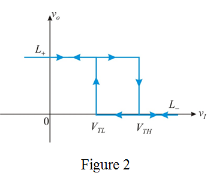

Step 1:
Threshold levels are and .
The input is greater than the higher threshold value.
The comparator 1 (op amp) output is at positive saturation level, that is, the output is high.
The comparator 2 (op amp) output is at negative saturation level, that is, the output is low.
Therefore, the inputs for RS flip flop are,
 and
and 
Hence, the flip flop is reset and the output voltage is zero.
Thus, the output voltage is,
.
Step 2:
The input is less than the lower threshold value.
The comparator 1 (op amp) output is at negative saturation level, that is, the output is low.
The comparator 2 (op amp) output is at positive saturation level, that is, the output is high.
The inputs for RS flip flop are,
 and
and
Thus, the flip flop is set and the output voltage is equal to  .
.
Hence, the output voltage is,
.
Step 3:
In the middle of the threshold values the comparator states do not change.
Draw the characteristics of the circuit.

Step 4:
Draw the characteristics of the bistable circuit.
Thus, the transfer characteristic of the 555 timer circuit is similar to that of an inverting bistable circuit.